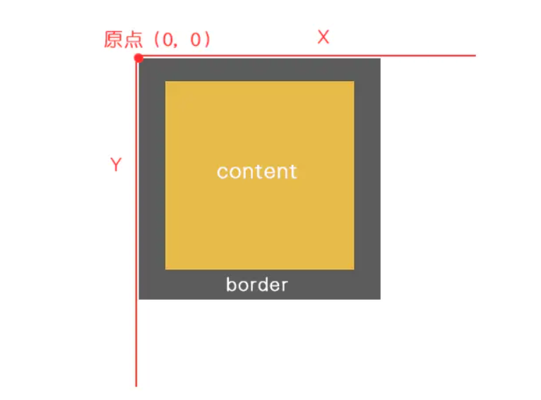
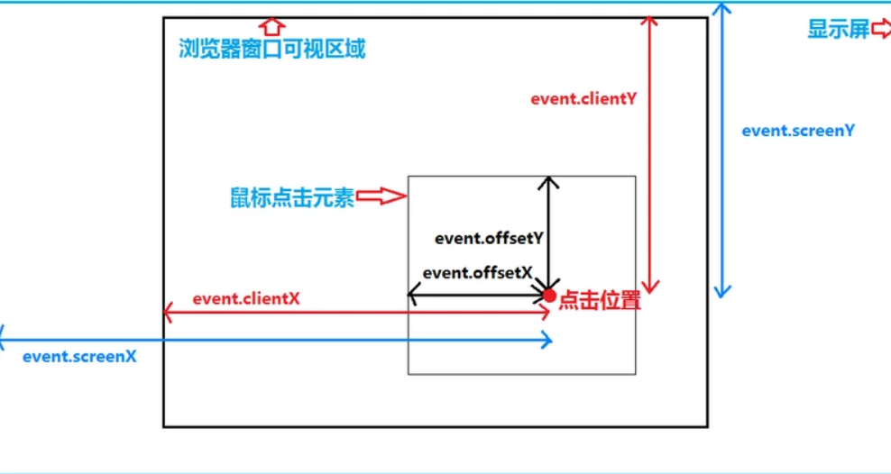

client 家族的组成
clientWidth 和 clientHeight
元素调用时：
body/html 调用时：
clientWidth：获取网页可视区域宽度。
clientHeight：获取网页可视区域高度。
声明：
clientWidth和clientHeight属性是只读的，不可修改。clientWidth和clientHeight的值都是不带 px 的，返回的都是一个数字，可以直接进行计算。
clientX 和 clientY
event调用：
clientX：鼠标距离可视区域左侧距离。
clientY：鼠标距离可视区域上侧距离。
clientTop 和 clientLeft
clientTop：盒子的上border。
clientLeft：盒子的左border。
三大家族 offset/scroll/client 的区别
区别1：宽高
offsetWidth = width + padding + border
offsetHeight = height + padding + border
scrollWidth = 内容宽度（不包含border）
scrollHeight = 内容高度（不包含border）
clientWidth = width + padding
clientHeight = height + padding
区别2：上左
offsetTop/offsetLeft：
- 调用者：任意元素。(盒子为主)
- 作用：距离父系盒子中带有定位的距离。
scrollTop/scrollLeft：
- 调用者：document.body.scrollTop（window调用）(盒子也可以调用，但必须有滚动条)
- 作用：浏览器无法显示的部分（被卷去的部分）。
clientY/clientX：
- 调用者：event
- 作用：鼠标距离浏览器可视区域的距离（左、上）。
函数封装：获取浏览器的宽高（可视区域）
函数封装如下：
1 | //函数封装：获取屏幕可视区域的宽高 |
案例：根据浏览器的可视宽度，给定不同的背景的色。
PS：这个可以用来做响应式。
代码如下：（需要用到上面的封装好的方法）
1 |
|
上当代码中，window.onresize事件指的是：在窗口或框架被调整大小时发生。各个事件的解释如下：
window.onscroll 屏幕滑动
window.onresize 浏览器大小变化
window.onload 页面加载完毕
div.onmousemove 鼠标在盒子上移动（注意：不是盒子移动）
获取显示器的分辨率
比如，我的电脑的显示器分辨率是：1920*1080。
获取显示器的分辨率：
1 | window.onresize = function () { |
上图中，不管我如何改变浏览器的窗口大小，title栏显示的值永远都是我的显示器分辨率：1920*1080。
pageX,clientX,screenX,offsetX区别
pageX/pageY:
鼠标相对于整个页面的X/Y坐标。

注意，整个页面的意思就是你整个网页的全部，比如说网页很宽很长，宽2000px，高3000px，那pageX,pageY的最大值就是它们了。
特别说明：IE不支持！
clientX/clientY：
事件发生时鼠标在浏览器内容区域的X/Y坐标（不包含滚动条）。
浏览器内容区域即浏览器窗口中用来显示网页的可视区域，注意这个可视，也就是说需要拖动滚动条才能看到的区域不算。
当你将浏览器窗口缩小时，clientX/clientY的最大值也会缩小，但始终，它们的最大值不会超过你浏览器可视区域。

特别说明：IE下此属性不规范，它们的最小值不是0而是2，也就是说IE下的clientX/clientY比火狐下始终大2px。
screenX/screenY:
鼠标在屏幕上的坐标。screenX,screenY的最大值不会超过屏幕分辨率。
offsetX/offsetY:

特别说明：只有IE支持！相当于IE下的pageX,pageY。
总结
